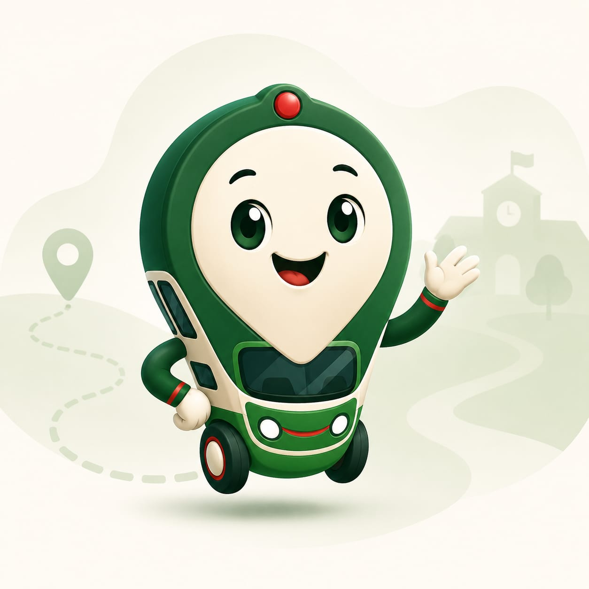
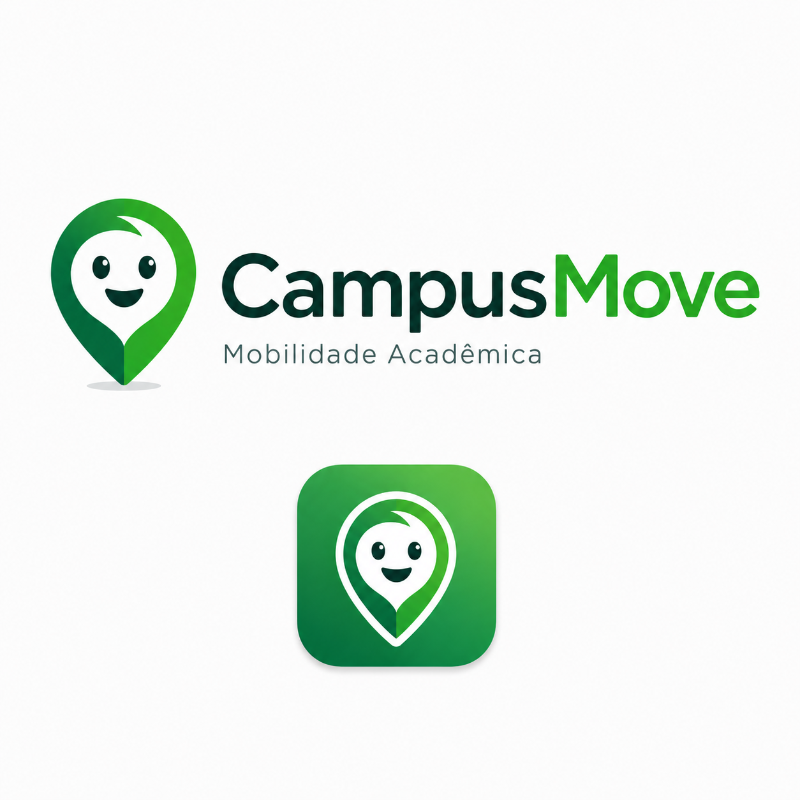

Movinho
Eu sou o Movinho. Vou te ajudar a encontrar campus, rotas e transporte institucional.

MinhaJardineira
Mobilidade acadêmica em tempo real
Eu sou o Movinho. Vou te ajudar a encontrar campus, rotas e transporte institucional.
Usamos sua localização apenas para exibir rotas e horários mais precisos. Você pode ajustar isso a qualquer momento.
Primeiro acesso
Escolha seu perfil para eu mostrar as funções certas do CampusMove.
Ambiente institucional
O CampusMove organiza serviços por instituição, campus e perfil de acesso.
Escolha o ambiente institucional para acessar o serviço ativo no seu campus.
Neste MVP, o serviço MinhaJardineira está ativo para o IFCE Campus Maracanaú.
Login visual
Não há autenticação real neste protótipo. Dados acadêmicos seriam validados pela instituição no sistema final.
Ambiente restrito
Acesso administrativo restrito.
Ambiente restrito para administradores autorizados.
Acesso restrito
Este acesso ainda está bloqueado neste protótipo.
Ambiente administrativo
Olá, administrador! Ambiente administrativo em preparação para próximas fases do CampusMove.
Acesso público
Você pode consultar eventos públicos, rotas públicas e horários públicos.
Perfil acadêmico, motorista e administração exigem autorização institucional.
IFCE — Campus Maracanaú
Sua próxima viagem aparece aqui. Eu aviso se houver mudança.
Transporte institucional
Consulte os horários demonstrativos do transporte institucional.
Escolha o sentido e veja os horários disponíveis.
Mobilidade SaaS
Simule caminhos e visualize a operação do transporte institucional.
Neste protótipo, as rotas são demonstrativas e ajudam a visualizar como o CampusMove orienta deslocamentos acadêmicos.
Escolha uma origem e destino para ver uma rota demonstrativa.
Eventos no campus
Se você vai para um evento, posso abrir uma rota sugerida.
Perfil do protótipo
Aqui ficam as informações visuais do seu vínculo com o campus.
VínculoAluno
InstituiçãoInstituto Federal do Ceará
CampusMaracanaú
Matrícula: 20261045******Dados acadêmicos protegidos pela instituição.
A foto do perfil é apenas visual neste protótipo. No sistema real, imagens passariam por validação institucional.
Preferências do protótipo
Essas opções deixam o app mais confortável para você.
SEM_SINAL